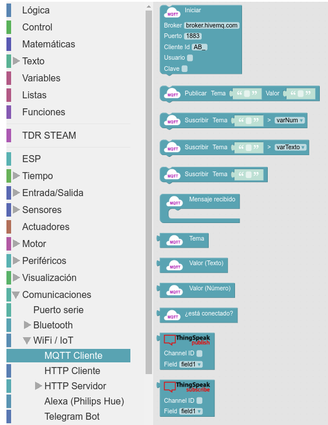
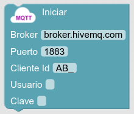
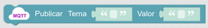
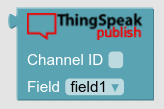
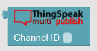
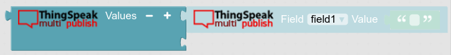
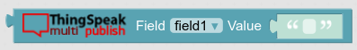

Las funcionalidades de IOT / thingspeak en arduinoblocks se encuentran en la ruta de herramientas Comunicaciones > WIFI / IoT > MQTT Cliente:

Las que vamos a utilizar en los retos siguientes son:
| Orden |
Funcionalidad |
|  |
Inicia las comunicaciones con un suministrador de servicios MQTT , tendremos que dar la dirección del broker (en el caso de thingspeak debe ser mqqt3.thingspeak.com), puerto 1833 (siempre fijo), cliente ID, usuario y clave, estos tres últimos dados por thingspeak en nuestra alta de dispositivos y canales en el servicio. |
|  |
Publica (graba) en los temas (campos de un canal de thingspeak) valores, habitualmente adquiridos por un sensor. |
|  |
Define el tema a publicar en la orden anterior, tenemos que indicar el nº de canal dónde publicar y el campo en el que lo haremos. |
|  |
Con arduinoblocks podemos publicar dato a dato (caso anterior) cada x tiempo, o hacer una publicación múltiple. Esta orden es de publicación múltiple (multipublish), y define el tema a publicar indicando sólo el canal. |
|  |
Este bloque permite la concatenación de los diferentes valores a publicar en el tema. Esta función es exclusiva de multipublish. |
|  |
Esta orden complementa la anterior y define los diferentes campos con sus valores para incluir en la orden anterior. Esta función es exclusiva de multipublish. |